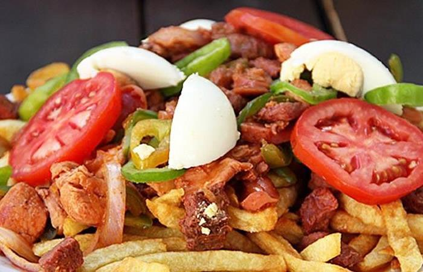
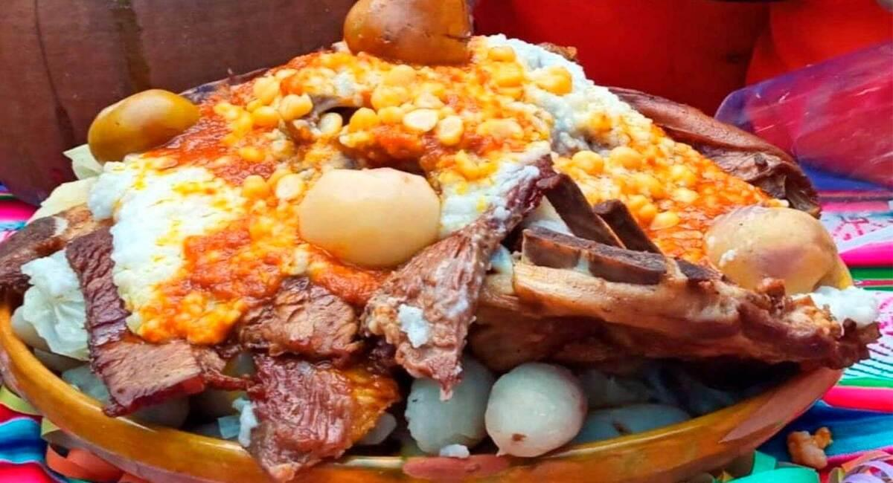

El ingrediente principal es la papaliza (papa deshidratada), acompañada de un ají que consiste en un ahogado de varios ingredientes y es emplatado usualmente con arroz blanco.
Es un postre típico que se sirve frío o caliente. Se acostumbra a espolvorearlo con canela y clavo de olor.
Es un caldo de pescado. Para su elaboración se utilizan dientes de ajo, ají amarillo, muña, papas y chuño.
Consiste en un queso derretido en ají amarillo, choclo desgranado, huevos duros picados y papa blanca.
Es una sopa de papas picadas. Predomina un caldo de verduras y huevos batidos.
Es un platillo típico de la gastronomía peruana, servido con papas hervidas y bañadas en ají de maní. Es emplatado con lechuga y huevos duros.
Es una sopa espesa y picante que lleva como ingredientes principales camarones, papa hervida, queso fresco, choclo, arroz y huevo, además de un aderezo de ají colorado.
El principal ingrediente son las arvejas. El plato es acompañado de papas blancas y un ahogado de ají amarillo.
Some quick example text to build on the card title and make up the bulk of the card's content.
Es un tipo de lasaña (por la estructura) que tiene de pisos y es acompañado de un jigote de varios ingredientes.
Es un plato originario de los Andes que lleva por ingredientes papas, cebolla, maní y leche.

Es un plato de puré de zapallo con verduras retostadas, rodajas de choclo, jigote de ají amarillo, tomate y cebolla. Puede ser servido con queso rallado y perejil picado.
De la gran variedad de pescados en el país, el Tambaquí es uno de los más requeridos y es cocinado a la parrilla, marinado con sal y limón.